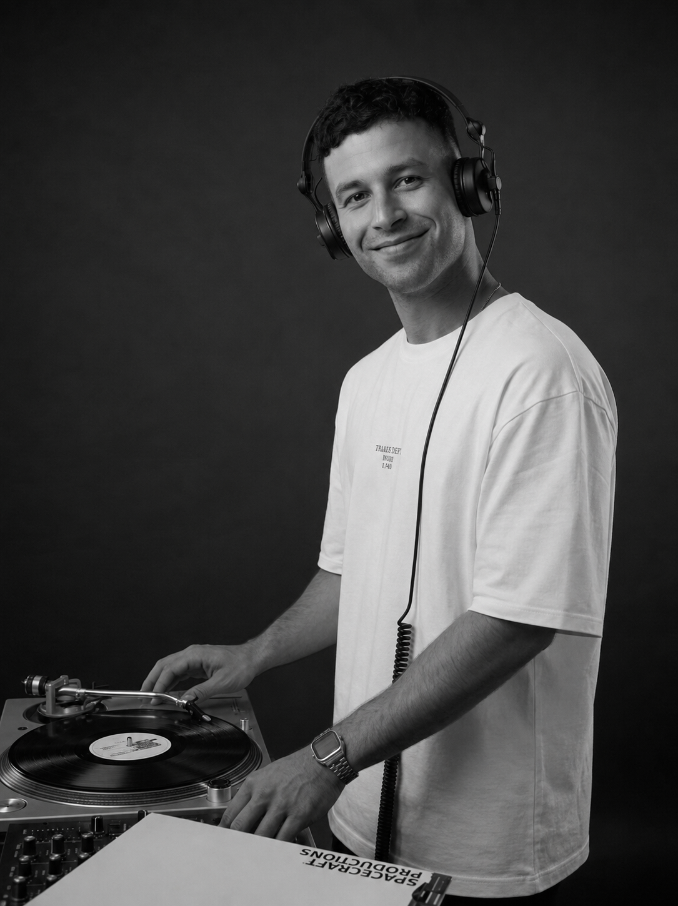
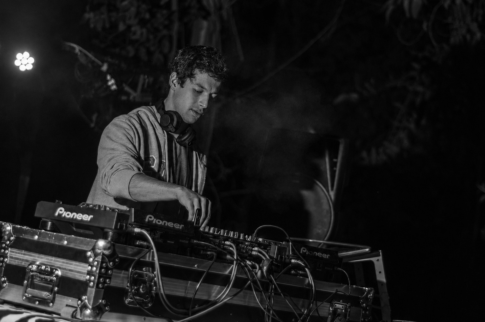
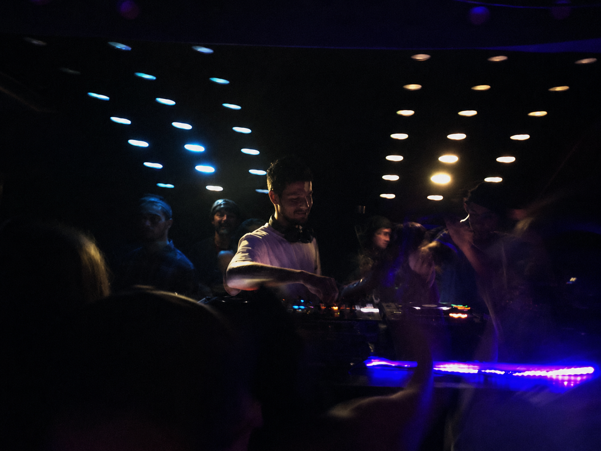
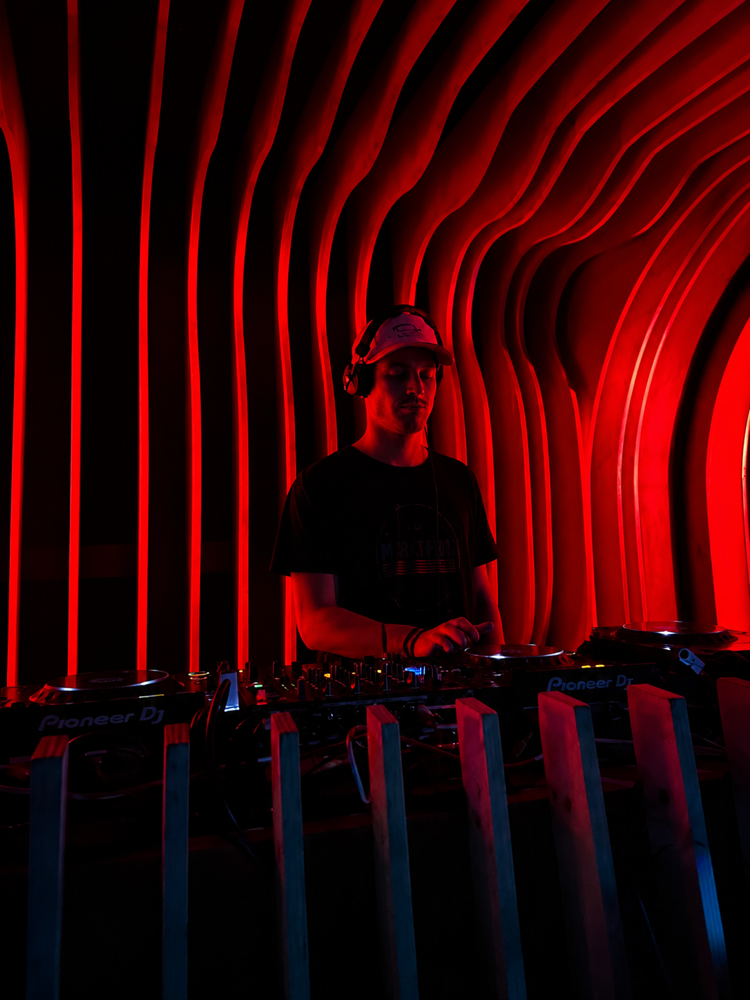

Groove rooted in drums. House and deep house between Concepción and Cologne — drums that hit with intention, chords that breathe.

"Before he played a track, he played drums."
He started at 14. That rhythmic foundation — the groove, the pulse, the physical urgency of a drum kit — is the backbone of everything he produces and mixes today. At 17, he traded the cymbals for his first controller, and from there the path was direct: from EDM to house, and from house to a deeper sound, rooted in the Chicago, Detroit and French schools.
Raised in the Concepción, Chile scene, where he held a residency at Club Boga, he now lives and produces in Cologne, Germany — mixing on vinyl and digital, with chords that breathe and drums that hit with intention. His collaborations — KinkyGroove and People From Nowhere — reflect what he values most about this scene: playing in community, not alone.
Currently in active music production.
Emphasis on drums with character and chords that stand out. References:
Player will populate once tracks/sets are uploaded to the SoundCloud account.



Specific models to be confirmed per venue.
Flight coordination needed in advance for dates outside Europe.